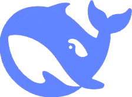

织雾满穗
预览版
一个小而认真的个人站点。
这里会陆续放上各种资料库和在线小工具，不追求数量，只求打开就能用。
关注我的哔哩哔哩
粉丝到 Lv2 就能解锁「合集」，我就把歌单整理成合集 · 不用投币 到 Lv2 解锁合集 · 不用投币
🧭 开始探索
点开卡片就能进去
🎮 资料库
Roblox ID 宝库
Roblox 游戏内可用的音乐与音效 ID，欢迎进群投稿补充；支持关键词搜索、分类筛选、一键复制、收藏与个人隔离区。
🚨 在线游戏临界 · 紧急调度
在织雾市 911 指挥中心接警、派车、控场：220×160 大世界，城区、乡下、工业区、监狱、机场、政务区、山区与海湾；单人生涯/无尽值班，或输入六位编号联机合作。
🕰️ 时光机怀旧版 · 2026 年 8 月 25 日
回到网站刚起步时的样子：粉色界面、旧版宝库和旧版反馈页。旧版只作定格展示，不再更新。
✨ 这个小站的特点
打开就能用
不需要注册、不需要下载、不需要装插件，点开链接就能直接用。
手机也顺手
针对小屏幕单独调过：按钮够大、列表够清爽，低配手机自动关掉花哨特效。
深色模式
右上角一键切换明暗主题，默认跟随系统设置，选过一次就会记住。
不收集隐私
不要账号、不埋广告，你的收藏、偏好等数据都只留在你自己的浏览器里。
开发者
织雾满穗
HuTinJian

支持者DeepSeek-V4.1-Flash-1017
AI Assistant